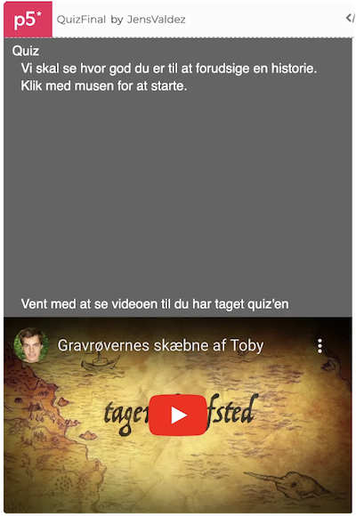

Quiz
Indholdsfortegnelse
Opgave 3 - Quiz
Vi skal lave følgende quiz: https://editor.p5js.org/JensValdez/full/pJO9kT0hI
Du kan lige prøve quiz’en, så du kender funktionaliteten.
Når du skal lave en større opgave er det nemmest at dele den op i mindre delopgaver som du godt kan løse. For at hjælpe har jeg oprettet et par delopgaver. Hvis du går i stå må du gerne se på løsningenseksemplet for delopgaven. Herefter skal du selv prøve at løse den. Det er fint hvis du finder dine egne løsninger til delopgaverne. Det er dog en god ide altid at se løsningseksemplet for hver delopgave igennem og forstå det efter at du har løst en delopgave.
Det er en lidt avanceret opgave som har fokus på følgende:
- Hvordan man med fordel kan starte med at lave en generel løsning og herefter gøre den specifik. Det er således først i den sidste delopgave at man tilføjer hvad quiz’en handler om.
- Hvordan man gør koden nemmere at lave, læse og tilrette ved at adskilde data (spørgsmålene) og program logik.
- Hvordan man definere data strukturer (array’et med spørgsmål) og læser og opdaterer indholdet.
- Tilretning af HTML’en (i index.html), så der vises en indlejret youtube film.
- Hvordan man holder styr på programmets tilstand (gameState) til at styre dialogen med brugeren.
- Hvordan man kan starte med at lave den mest simple version af et spil men som stadig kan spilles hvorefter man gradvist tilføjer flere og flere lækre detaljer.
Start her
Start med at forstå start kode skabelonen:
let currentQuestion = 0;
let yPositionForQuestionsToStart = 0;
var questions = [
{
question: "Question 1",
options: ["Q1 Option 1", "Q1 Option 2", "Q1 Option 3"],
selected: -1,
correct: 0,
},
{
question: "Question 2",
options: ["Q2 Option 1", "Q2 Option 2", "Q2 Option 3"],
selected: -1,
correct: 0,
},
];
function setup() {
createCanvas(400, 320);
textSize(15);
fill(255);
}
function draw() {
background(100);
if (currentQuestion < questions.length) {
showQuestionsToAnswer();
}
}
function showQuestionsToAnswer() {
fill(0);
rect(10, 30, 380, 70);
yPositionForQuestionsToStart = 30;
fill(255);
text(questions[currentQuestion].question, 10, 20);
if (questions[currentQuestion].selected == -1) {
for (let i = 0; i < questions[currentQuestion].options.length; i++) {
yPositionForQuestionsToStart += 20;
text(
"Tryk " +
(i + 1) +
" på keyboarded: " +
questions[currentQuestion].options[i],
20,
yPositionForQuestionsToStart
);
}
} else {
currentQuestion++;
}
}
function keyPressed() {
if (currentQuestion < questions.length) {
if (key == "1") {
questions[currentQuestion].selected = 0;
}
if (key == "2") {
questions[currentQuestion].selected = 1;
}
if (key == "3") {
questions[currentQuestion].selected = 2;
}
}
}
og kopier koden ind i et nyt program i p5js editoren. Giv spillet et navn og husk at gemme løbende.
Delopgave 1:
Tilret så programmet har en gameState (ligesom vi havde i HeroMan og GrandPrix spillene). Spillet skal til at starte med have to tilstande QUIZ-QUESTIONS og QUIZ-FINISHED-SCREEN. Når Quiz’en er færdig kan du bare skrive at quizen er færdig uden at lave statistik på hvor mange spørgsmål der er svaret rigtig på.
Prøv løsningen til delopgaven her: https://editor.p5js.org/JensValdez/full/AvLZ0_BjO
Delopgave 2:
Tilret så brugeren får af vide hvor mange spørgsmål der er svaret rigtigt på (og ud af hvor mange spørgsmål) når quizen er færdig
Prøv løsningen til delopgaven her: https://editor.p5js.org/JensValdez/full/mbNUIcOJi
Delopgave 3:
Tilret så der også er en gameState ved navn QUIZ-START-SCREEN. Quiz’en skal starte når man klikker med musen.
Prøv løsningen til delopgaven her: https://editor.p5js.org/JensValdez/full/sEZNELSUh
Delopgave 4:
Tilret så de svar man har givet vises. Hvis man har svaret rigtigt skal teksten vises med grøn og ellers skal det vises med rød farve.
Prøv løsningen til delopgaven her: https://editor.p5js.org/JensValdez/full/Z-nXJSXCz
Delopgave 5:
Tilret så det er dine egne spørgsmål og svarmuligheder der vises, samt at man kan se videoen nedenfor for at se de korrekte svar.
Prøv løsningen til delopgaven her: https://editor.p5js.org/JensValdez/full/k5dTLT4qC
Delopgave 6:
Tilret så den youtube video som har har baseret quizen på vises under quiz’en
Prøv løsningen til delopgaven her: https://editor.p5js.org/JensValdez/full/pJO9kT0hI
Færdig løsning:
Quiz
Table of Contents
Task 3 - Quiz
We are going to create the following quiz: https://editor.p5js.org/JensValdez/full/pJO9kT0hI
You can try the quiz to understand its functionality.
When tackling a larger task, it's easiest to break it down into smaller, manageable subtasks. To help, I've created a few subtasks. If you get stuck, feel free to look at the solution example for the subtask. Afterward, you should try to solve it yourself. It's fine if you come up with your own solutions. However, it's always a good idea to review and understand the solution example for each subtask after you've completed it.
This is a slightly advanced task that focuses on the following:
- How it can be beneficial to start with a general solution and then make it specific. Thus, the topic of the quiz is only added in the final subtask.
- How to make the code easier to create, read, and modify by separating data (the questions) from program logic.
- How to define data structures (the array of questions) and read and update their content.
- Modifying the HTML (in index.html) to display an embedded YouTube video.
- How to keep track of the program's state (gameState) to control the dialogue with the user.
- How to start by creating the simplest playable version of a game and then gradually adding more and more polished details.
Start Here
Start by understanding the initial code template:
let currentQuestion = 0;
let yPositionForQuestionsToStart = 0;
var questions = [
{
question: "Question 1",
options: ["Q1 Option 1", "Q1 Option 2", "Q1 Option 3"],
selected: -1,
correct: 0,
},
{
question: "Question 2",
options: ["Q2 Option 1", "Q2 Option 2", "Q2 Option 3"],
selected: -1,
correct: 0,
},
];
function setup() {
createCanvas(400, 320);
textSize(15);
fill(255);
}
function draw() {
background(100);
if (currentQuestion < questions.length) {
showQuestionsToAnswer();
}
}
function showQuestionsToAnswer() {
fill(0);
rect(10, 30, 380, 70);
yPositionForQuestionsToStart = 30;
fill(255);
text(questions[currentQuestion].question, 10, 20);
if (questions[currentQuestion].selected == -1) {
for (let i = 0; i < questions[currentQuestion].options.length; i++) {
yPositionForQuestionsToStart += 20;
text(
"Press " +
(i + 1) +
" on the keyboard: " +
questions[currentQuestion].options[i],
20,
yPositionForQuestionsToStart
);
}
} else {
currentQuestion++;
}
}
function keyPressed() {
if (currentQuestion < questions.length) {
if (key == "1") {
questions[currentQuestion].selected = 0;
}
if (key == "2") {
questions[currentQuestion].selected = 1;
}
if (key == "3") {
questions[currentQuestion].selected = 2;
}
}
}
and copy the code into a new program in the p5.js editor. Give the game a name and remember to save your progress regularly.
Subtask 1:
Modify the program to have a gameState (like we had in the HeroMan and GrandPrix games). Initially, the game should have two states: QUIZ-QUESTIONS and QUIZ-FINISHED-SCREEN. When the quiz is finished, you can just write that the quiz is done without providing statistics on how many questions were answered correctly.
Try the solution for this subtask here: https://editor.p5js.org/JensValdez/full/AvLZ0_BjO
Subtask 2:
Modify the program so that the user is told how many questions were answered correctly (and out of how many questions) when the quiz is finished.
Try the solution for this subtask here: https://editor.p5js.org/JensValdez/full/mbNUIcOJi
Subtask 3:
Modify the program to also include a gameState called QUIZ-START-SCREEN. The quiz should start when the mouse is clicked.
Try the solution for this subtask here: https://editor.p5js.org/JensValdez/full/sEZNELSUh
Subtask 4:
Modify the program to display the answers given. If the answer was correct, the text should be green; otherwise, it should be red.
Try the solution for this subtask here: https://editor.p5js.org/JensValdez/full/Z-nXJSXCz
Subtask 5:
Modify the program to use your own questions and answer options, and allow the user to watch the video below to see the correct answers.
Try the solution for this subtask here: https://editor.p5js.org/JensValdez/full/k5dTLT4qC
Subtask 6:
Modify the program to display the YouTube video on which the quiz is based below the quiz.
Try the solution for this subtask here: https://editor.p5js.org/JensValdez/full/pJO9kT0hI